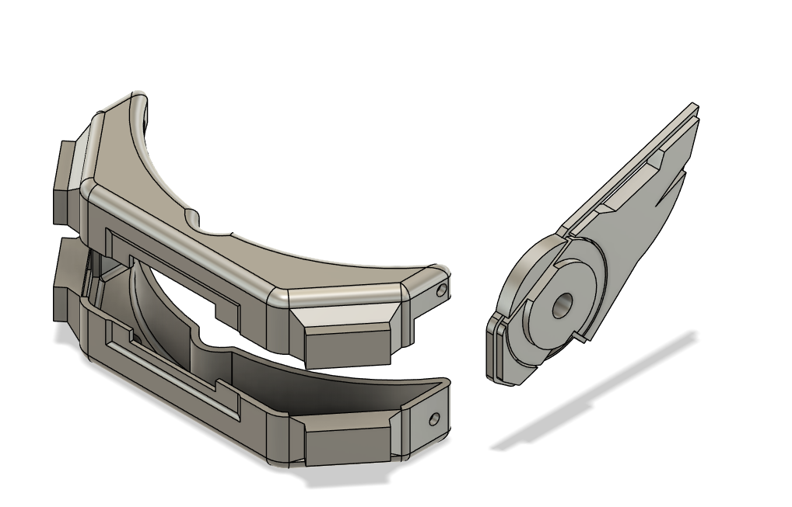
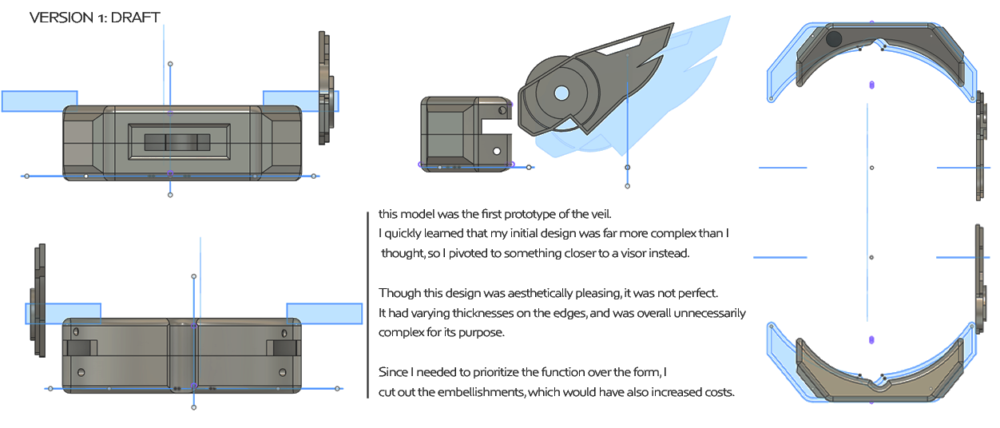
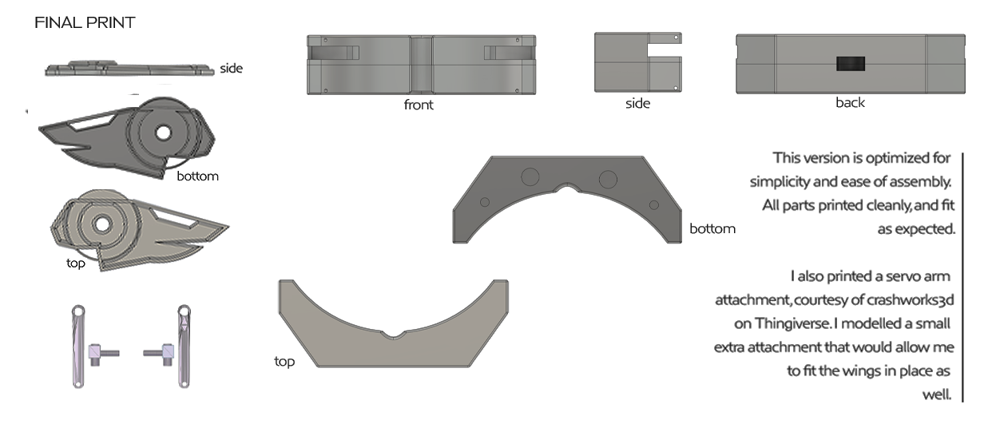

Process
The development process began with conceptual sketching that established the aesthetic direction and interactive intent. Early drawings defined the winged form and identified required components, including LEDs, an OLED display, a microphone, an accelerometer, and servos. The reactive behavior was defined at a conceptual level before mechanical constraints were fully understood.

The first CAD prototype translated the sketches into a detailed 3D model emphasizing a lot of filleted edges and decorative complexity. During review, several issues became clear: the geometry was unnecessarily intricate, wall thickness varied across the structure, assembly was inefficient, and material and time costs were higher than justified by function.

This led to a design pivot. The form was simplified into a visor-like structure with standardized edge thickness and modular components. Embellishments were reduced, and the design prioritized structural integrity, clean printing, servo alignment, and mechanical clarity.

>
Mechanical optimization followed. The servo arm interface was redesigned, and a custom attachment was modeled to securely mount the wings. Clearance for articulation was confirmed, and part fitment was refined to ensure reliable assembly after printing.

Electronics integration came next. The Arduino, sensors, and OLED were installed within the cavity. Servo power wiring was soldered, cables were routed through constrained internal space, and components were secured using tape and hot glue where necessary.
The final phase involved assembly and testing. Print fitment was verified, servo rotation was tested to ensure proper wing articulation, and sensor responsiveness was evaluated through motion and sound input. The completed device was worn and demonstrated as a functional prototype, reflecting iterative refinement driven by physical constraints rather than purely aesthetic ambition.